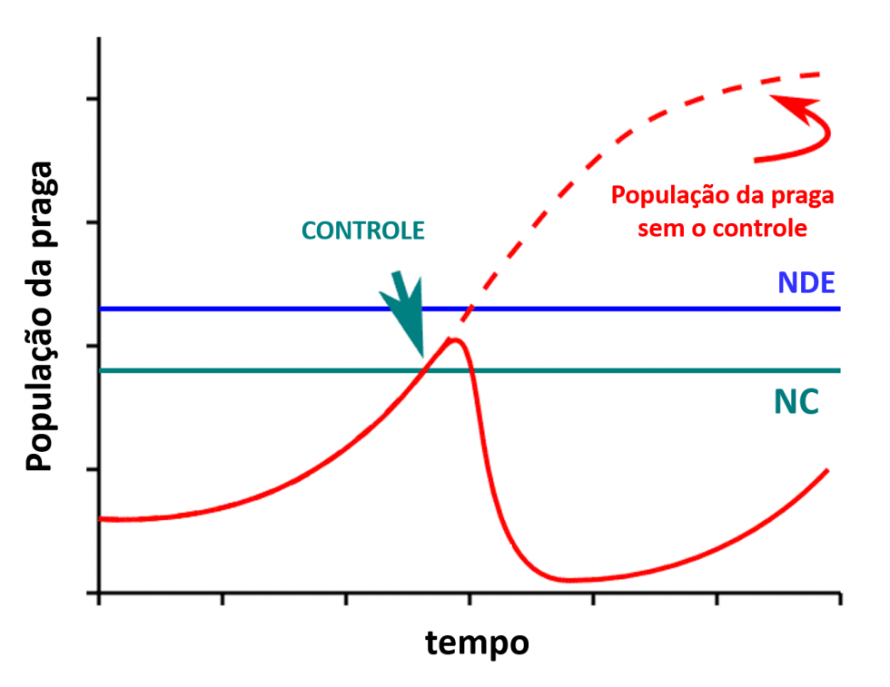
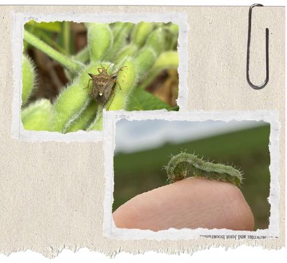

MIP Digital – Diagnóstico
De Campo: Soja Sustentável
O que é o MIP?
Filosofia que une ferramentas para controle de pragas abaixo do nível de dano, priorizando o meio ambiente.
NC
(Nível de Controle)
NDE
(Nível de Dano Econômico)

Embrapa
📚 Referência Técnica:
Baseado no Manual de Identificação de Pragas e MIP da Embrapa Soja.
Baseado no Manual de Identificação de Pragas e MIP da Embrapa Soja.

Sua lavoura está segura? Faça o diagnóstico de monitoramento.
🚜🔍🌾
Resultado da análise agronômica.